5' 7" · A power-ballad singer in her forties with a trim, athletic, braced arcade build and commanding performance energy. Lean and fit rather than heavy: a firm torso, trim hips and thighs, a defined waist, a low centre of gravity and planted weight, carrying about twenty pounds less than a thickset build — strong, not bulky. Never narrow, dainty or elongated, and never heavy, wide-hipped or thick-thighed. Her recognition cue is that her wavy auburn hair mass is visibly wider than her shoulders — a large shoulder-clearing mass of thick wavy auburn hair with a high crown and wide side volume, worn completely loose and down — every strand falls free from the scalp, with nothing gathered, tied, clipped, twisted or swept back at the crown, temples or nape. No hat or headwear. She wears a structured crimson performance jacket with angular lapels over a dark fitted top, high-waisted blue mom jeans, a crimson waist accent, and chunky ankle boots in near-black dark brown leather, with visible laces: warm mid-brown cross-laced cords over a dark tongue, at least three readable rungs per boot, tied off at the top. The laces are brown, but a distinctly lighter, warmer, more saturated brown than the boot leather — they must read as their own material at a glance, with at least three tone steps between lace and boot. She holds one wireless handheld microphone upright in her character-right hand; no cord, no stand. Her ready stance has flexed knees, torso braced over a low centre, feet planted, and the free hand compact and relaxed. Palette, as base/shadow/highlight per material: crimson #C01723 / #7A0D17 / #F0444E; blue denim #4B576F / #2F374A / #8B98B1; skin #B96B4F / #794333 / #DB9372; hair #593029 / #2D1815 / #8A4A3F; boot leather #3A2A23 / #1C1310 / #5E463A; boot lace #B98A55 / #6E4E2E / #E0B57F; microphone #6F747C / #34383E / #B5BAC0; eye white #F3E8D8; eye dark #251713; lip #8E2633; tooth highlight #F4E9D7. Never draw: hair pulled back, tied back, half-up, swept off the face, or gathered into a ponytail, bun, topknot, twist or clip; a heavy, thickset or broad-hipped build; laceless, slip-on or zip-sided boots; laces in the same brown as the boot leather, or close enough to blend into it; white, cream, pale or black laces; a hair mass equal to or narrower than the shoulders; slim upright fashion-pose proportions; a youth-coded or elderly caricature; the microphone in the character-left hand; a microphone cord, stand or duplicate microphone; a gown or skirt silhouette; logos, text or real brands.
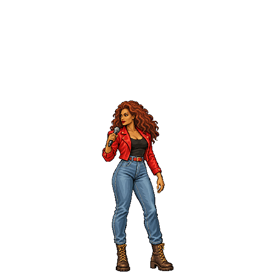
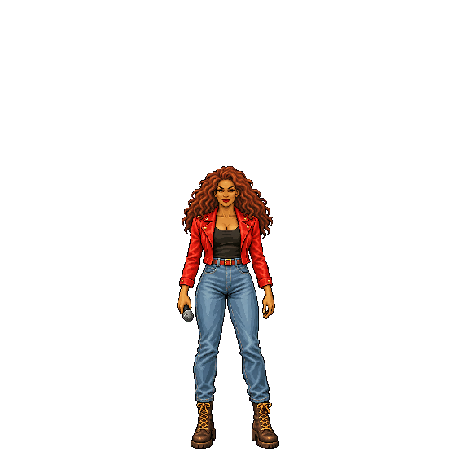
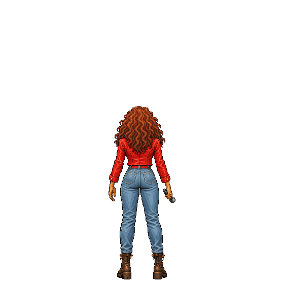
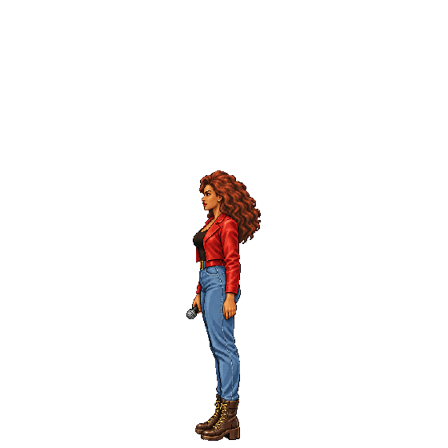
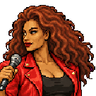
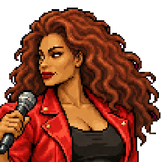
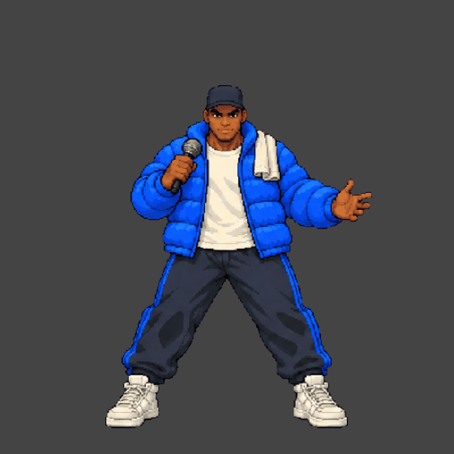
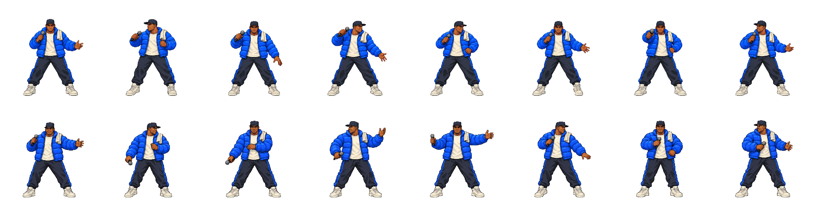
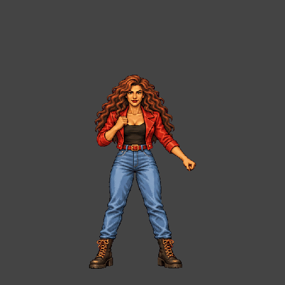
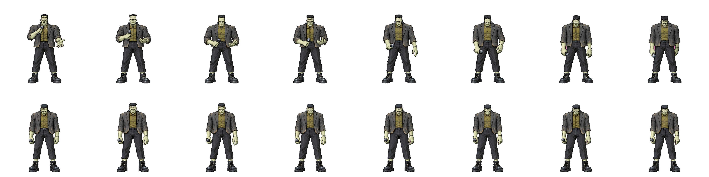
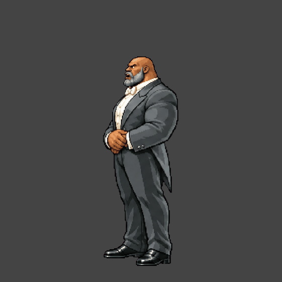
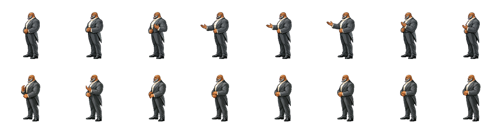
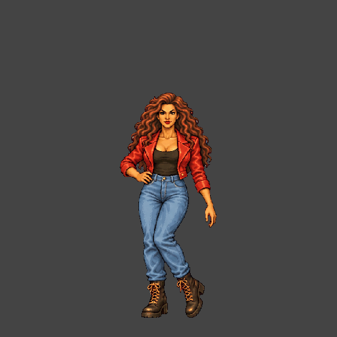
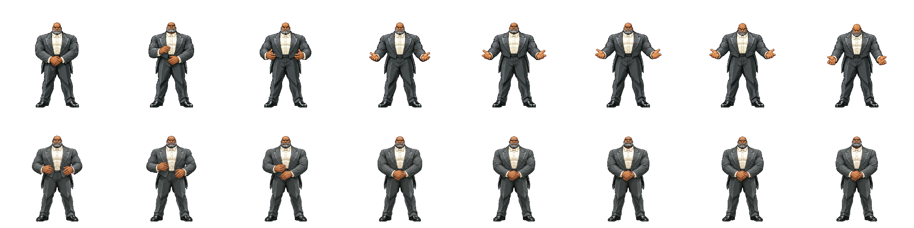